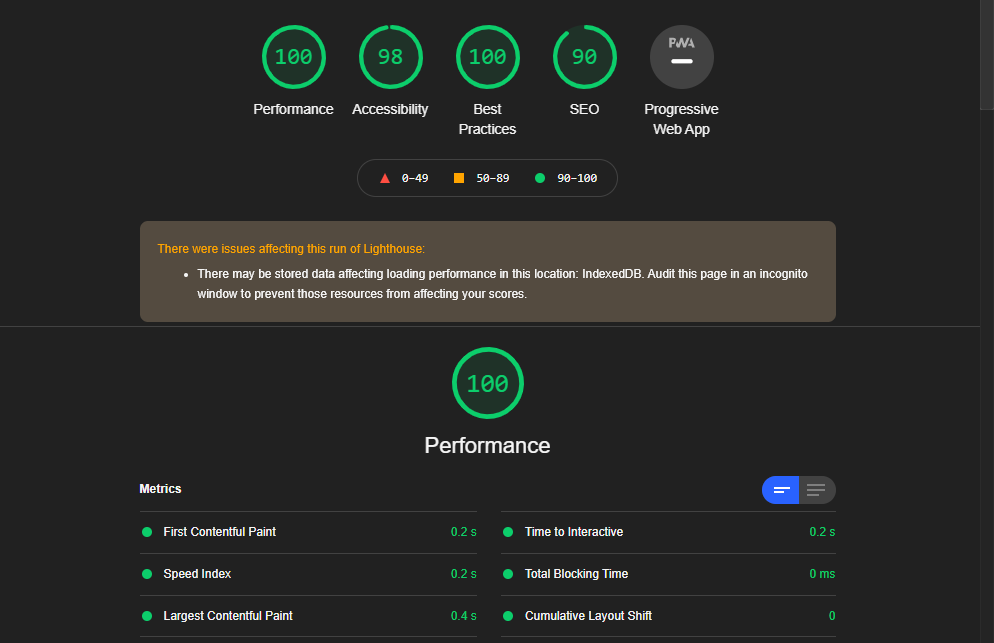
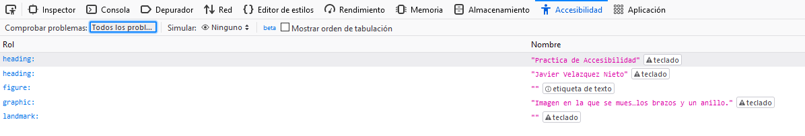

Testeo desde las herramientas de Google Chrome
Desde la herramienta de desarrollador de Google Chrome, el resultado del test de accesibilidad del apartado LightHouse es este.

Los tiempos de carga de las imagenes y el contenido de la pagina es de 18ms.
Testeo desde las herramientas de Firefox
Desde Firefox su herramienta de accesibilidad me muestra estos errores. He comprobado algunos y segun lo que he entendido hay etiquetas que se marcan como deprecadas, por lo que no se si seran fallos muy graves o no.